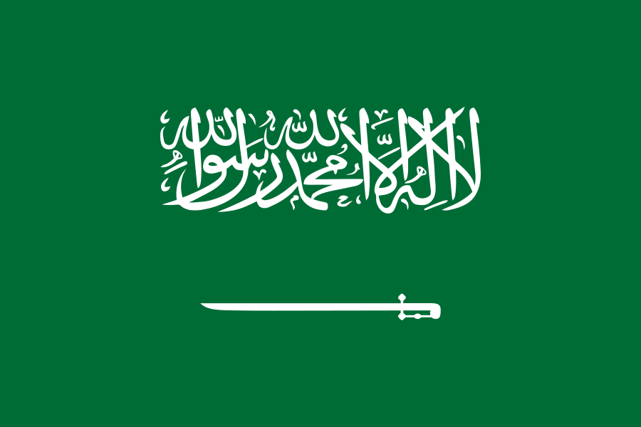
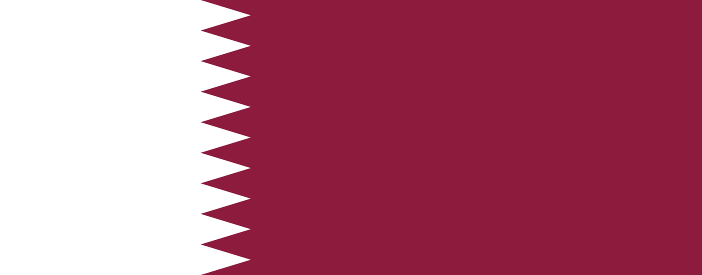
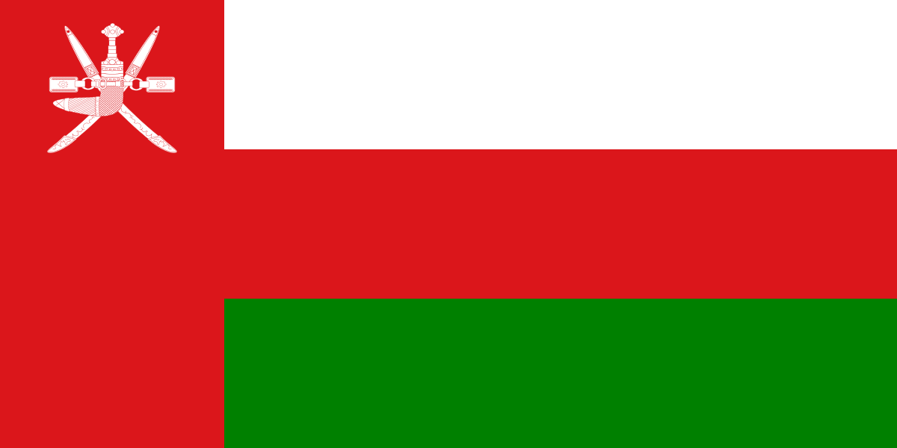

“All I wanted was to return home.”Anita Mary Mayanja
What is Safe Kazi
SafeKazi is a simple guide for Ugandans who are thinking about working in the Gulf. Many job adverts look convincing, but they do not prove that a recruiter is licensed. We want to help you slow down, ask the right questions and know where to turn before you pay or travel.
What you can do here
Check an agency
Look up the name of a recruitment agency before you share any documents or money.
Check Agency ↗Learn the warning signs
Read about common red flags, such as pressure to pay quickly or vague job details.
Warning Signs ↗Report a scam
Tell us about an agency that cheated you so that others can be more careful.
Report Scam ↗Find help
Get the contact details of the Ministry of Gender, Labour and Social Development.
Help & Contacts ↗Who we are?
Vision
Every Ugandan worker abroad, safe and informed.
Mission
To give migrant workers the truth before they travel and support them along the way.
Motto
Verify. Then fly.
Please remember
SafeKazi is an information guide. It is not a government office and it cannot guarantee that a job or an agency is safe. Always confirm a recruiter's licence through the official Ugandan register and ask for your terms in writing.
Why we do what we do
Hear from women whose experiences show why checking before travelling matters.
“She dumped me in the office without paying me.”Zaina Namisi
“Promised a waitress job in Dubai, taken to Oman instead.”Aisha Namawejje
These are individual accounts reported in the press, not statistics.
Countries we verify for
-

Saudi Arabia - United Arab Emirates
-

Qatar -

Oman